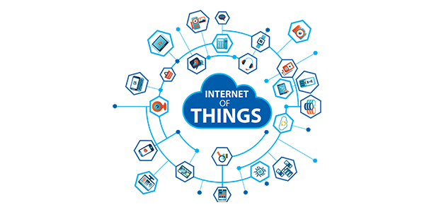
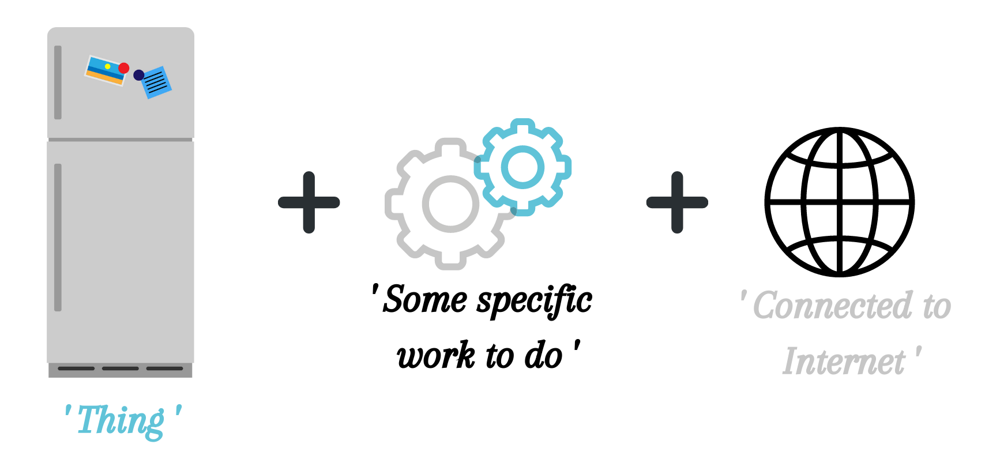
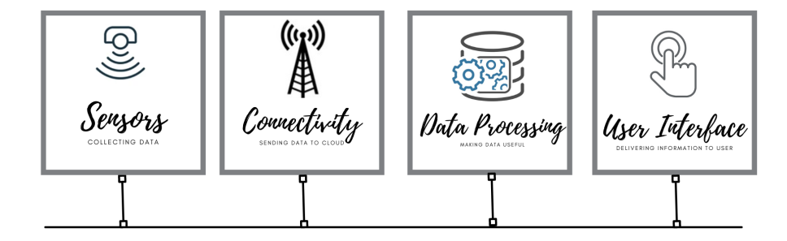

Internet of Things (IoT)
The Internet of Things (IoT) is a network of interrelated devices which are connected to internet to transfer and receive data from one to the other. In general , IoT is inter connectivity of devices in which collecting and exchanging information through particularly embedded softwares and sensors takes place.
- IoT is a giant network of connected things and people that are embedded with sensors, software, and other technologies – all of which collect and share data about the way they are used and about the environment around them over the internet or on a wireless newtork.

Image From europe.hughes
- A smart home is an excellent example of IoT, where various home appliances such as Air Conditioner, Lights, Smoke detector, Security alarm, etc are interconnected to share data with the user via a mobile application, so that the user can get detailed insight about the status and working of these appliances.
"Thing" in IoT
A "thing" in IoT is the asset that you want to control or monitor or measure, that is, observe closely. In many IoT products, the "thing" gets fully incorporated into a smart device. It can be a person with a heart monitor implant, a refrigerator with cool features, an automobile that has built-in sensors to alert the driver when tire pressure is low or any other natural or man-made object that can be assigned an Internet Protocol (IP) address and is able to transfer data over a network.

History
The main concept of a network of smart devices was discussed as early as 1982, with a modified Coca-Cola vending machine at Carnegie Mellon University becoming the first ARPANET- connected appliance,able to report its inventory and whether newly loaded drinks were cold or not.
The term "Internet of things" was coined by Kevin Ashton of Procter & Gamble, later MIT's Auto-ID Center, in 1999, though he prefers the phrase "Internet for things".
“If we have computer that knew everything there was to know about things - using data they gathered without any help from us - we would be able to track and count everything , and greatly reduce waste , loss and cost” -Kevin Ashton
How IoT Works?
IoT ecosystem is not limited to a particular field but has business applications in areas of home automation, vehicle automation, factory line automation, medical, retail, healthcare and more. IoT aims to take the connectivity to another level by connecting multiple devices at a time to the internet thereby facilitating man to machine and machine to machine interactions.

A complete IoT system integrates four distinct components:- Sensors/Devices : Sensors are the front end of the IoT devices. They collect meaningful data from their environment. A device can have a standalone sensor or consist of multiple sensors. Such Devices embedded with sensors and other technologies are the 'Things' in IoT. Things collect data from the environment, compute and integrate seamlessly with the physical world.
- Connectivity : Data collected via sensors is sent into cloud through a wireless network like cellular, satellite, Wi-Fi, Bluetooth, low-power wide-area networks (LPWAN), or connecting directly to the internet via ethernet . Choosing best connectivity depend upon the specific IoT application , but all of them accomplish the same task which is getting data into to the cloud.
- Data processing : After the data gets into to the cloud, a software program performs processing on that data according to the given instructions in the program. Like it may be simple, as checking whether the temperature is in an acceptable range or not. Or it may be complex, such as identifying objects using computer vision.
- A user interface : After processing the data, the information gathered is made useful to the user through a user interface like mobile application. It allow the user to proactively check the system. For example, a user might want to check the video feeds on various properties , so he can get the feeds on a mobile application or a web browser. However, it's not always a one-way communication. Depending on the IoT application, the user may also affect the system by performing an action. For example, the user might want to adjust the temperature in a cold storage , so he can use a mobile application to adjust the temperature.
IoT Communication Protocols
IoT communication protocols are modes of communication that protect and ensure optimum security to the data being exchanged between connected devices. The IoT devices are typically connected to the Internet via an IP (Internet Protocol) network.
However, devices such as Bluetooth and RFID allow IoT devices to connect locally. In these cases, there's a difference in power, range, and memory used. Connection through IP networks are comparatively complex, requires increased memory and power from the IoT devices while the range is not a problem. On the other hand, non-IP networks demand comparatively less power and memory but have a range limitation.
The IoT communication protocols or technologies are concerned, a mix of both IP and non-IP networks can be considered depending on usage.
How does the communication happen via Internet ?
IoT uses various IoT Protocols which are nothing but the set of rules that allows the electronic devices to communicate with each other. These rules includes which type of data is to be transmitted, the commands used to send & receive the data and how the data transfers are confirmed. The Internet Protocol is a method for the delivery of packets of data between hosts on a network (most notably, the Internet) and for uniquely identifying hosts on a network using what is known as an IP address.
IoT Protocols
IoT Protocols are broadly classified into two categories as follows :
-
IoT Network Protocols : IoT network protocols are used to connect devices over the network. These are the set of communication protocols typically used over the Internet. Following are the various IoT Network protocols:
-
IoT Data Protocols : IoT data protocols are used to connect low power IoT devices. These protocols provide point-to-point communication with the hardware at the user side without any Internet connection.